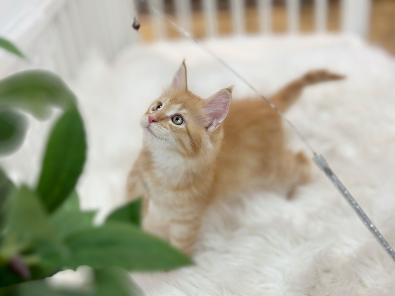
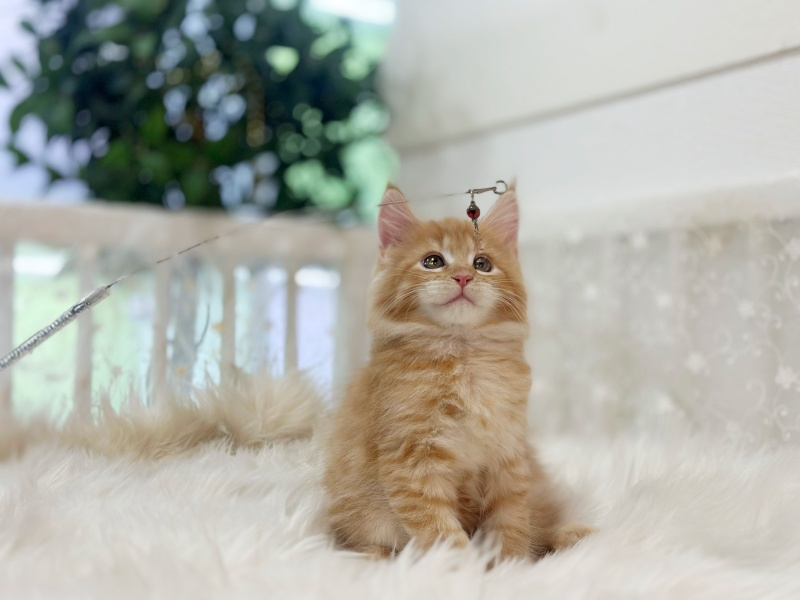
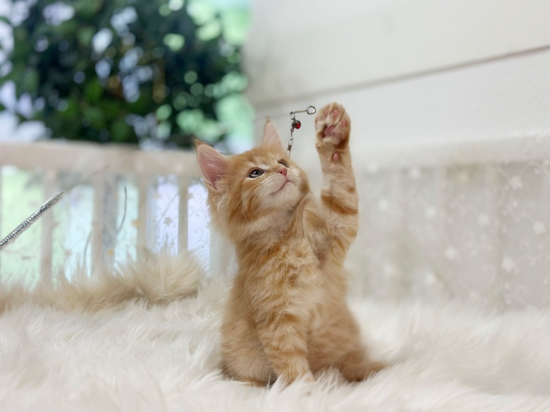
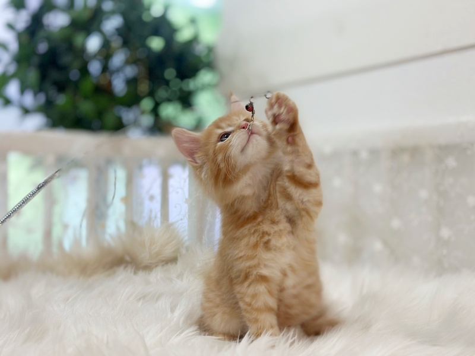
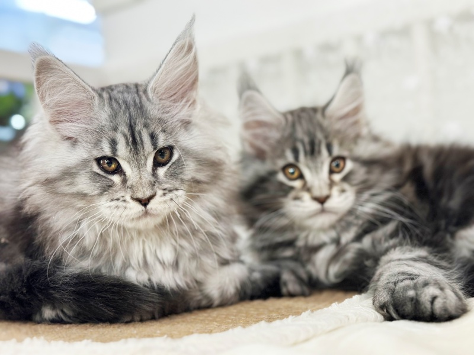

서울 강서구 마곡 Premium Maine Coon
마곡메인쿤분양
서울 강서구 마곡 및 인근 지역 가족을 위한 프리미엄 메인쿤분양 전문 상담입니다. 마곡 등 마곡 전역에서 메인쿤 입양 상담을 진행합니다.
Adoption Stories
지난 6개월간 입양된 아이들
메인쿤분양 전문 캐터리를 통해 새 가족을 만난 메인쿤들의 모습입니다. 마곡 지역에서도 동일한 품질의 분양 상담을 받으실 수 있습니다.

서울 강서구 마곡 메인쿤분양 안내
마곡 지역(마곡, 등촌, 화곡, 방화 등)에서 메인쿤분양을 찾고 계신다면, 메인쿤분양 전문 캐터리의 지역 맞춤 상담을 이용해 보세요. 마곡 거주 가족의 생활 환경과 반려 목적에 맞는 메인쿤을 추천해 드립니다.
메인쿤은 대형 장모종으로 메인쿤 크기, 메인쿤 성격, 털빠짐 관리 등 품종 특성을 미리 이해하는 것이 중요합니다. 마곡메인쿤분양 상담 시 메인쿤 고양이 종류별 특성과 분양 절차를 상세히 안내해 드립니다.
마곡메인쿤분양 상담은 마곡, 등촌, 화곡, 방화 등 마곡 전역에서 가능합니다.
마곡 지역 마곡메인쿤분양 특장점
지역 맞춤 상담
마곡 거주 가족의 생활 환경에 맞는 메인쿤 성격·크기 매칭을 제공합니다.
방문·직접 확인
마곡 인근 방문·화상 상담으로 메인쿤 고양이 종류와 건강 상태를 확인할 수 있습니다.
사후 관리 지원
분양 후 마곡 지역 그루밍·털빠짐·건강 관리 상담을 지속 지원합니다.
마곡 마곡메인쿤분양 갤러리




마곡메인쿤분양 자주 묻는 질문
Q. 마곡에서 메인쿤분양 상담이 가능한가요?
A. 네, 마곡메인쿤분양 상담은 마곡, 등촌, 화곡, 방화 등 마곡 전역에서 가능합니다.
Q. 마곡 메인쿤분양 시 어떤 종류가 인기인가요?
A. 실버 태비, 블루 스모크, 브라운 태비 등이 인기이며, 마곡 가족 환경에 맞는 메인쿤 고양이 종류를 추천해 드립니다.
Q. 마곡에서 성묘 분양도 가능한가요?
A. 성묘 메인쿤 분양이 가능합니다. 성격이 안정된 성묘는 마곡 지역 초보 반려인에게도 적합합니다.
마곡메인쿤분양 상담을 원하시면 지금 연락주세요.
마곡 메인쿤 입양문의 0505-464-1004다른 지역 메인쿤분양
- 인천메인쿤분양
- 부천메인쿤분양
- 시흥메인쿤분양
- 광명메인쿤분양
- 안양메인쿤분양
- 안산메인쿤분양
- 일산메인쿤분양
- 김포메인쿤분양
- 의정부메인쿤분양
- 강남메인쿤분양
- 수원메인쿤분양
- 대구메인쿤분양
- 부산메인쿤분양
- 전주메인쿤분양
- 울산메인쿤분양
- 목포메인쿤분양
- 광주메인쿤분양
- 대전메인쿤분양
- 김해메인쿤분양
- 제주도메인쿤분양
- 진주메인쿤분양
- 진해메인쿤분양
- 밀양메인쿤분양
- 군산메인쿤분양
- 언양메인쿤분양
- 청주메인쿤분양
- 온양메인쿤분양
- 충주메인쿤분양
- 춘천메인쿤분양
- 여주메인쿤분양
- 원주메인쿤분양
- 이천메인쿤분양
- 용인메인쿤분양
- 과천메인쿤분양
- 남양주메인쿤분양
- 의왕메인쿤분양
- 동두천메인쿤분양
- 군포메인쿤분양
- 구미메인쿤분양
- 산본메인쿤분양
- 성남메인쿤분양
- 분당메인쿤분양
- 평택메인쿤분양
- 동탄메인쿤분양
- 송탄메인쿤분양
- 오산메인쿤분양
- 태안메인쿤분양
- 서산메인쿤분양
- 당진메인쿤분양
- 화성메인쿤분양
- 하남메인쿤분양
- 서울메인쿤분양
- 미사메인쿤분양
- 강동메인쿤분양
- 용산메인쿤분양
- 영등포메인쿤분양
- 청라메인쿤분양
- 송도메인쿤분양
- 구리메인쿤분양
- 별내메인쿤분양
- 홍성메인쿤분양
- 조치원메인쿤분양
- 동해메인쿤분양
- 태백메인쿤분양
- 마산메인쿤분양
- 홍천메인쿤분양
- 이태원메인쿤분양
- 서초메인쿤분양
- 송파메인쿤분양
- 잠실메인쿤분양